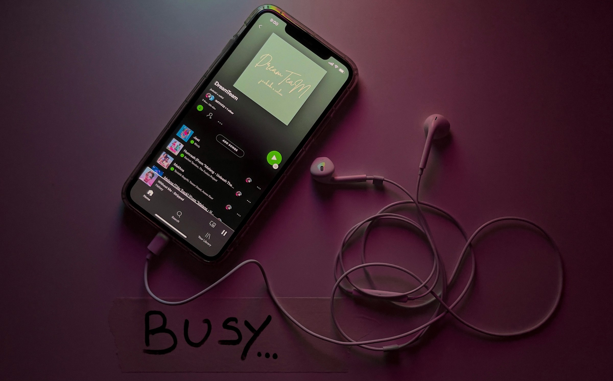

¿Has soñado alguna vez con disfrutar de todas las ventajas de Spotify Premium sin tener que pagar? Ahí es donde Spotify Premium APK aparece como un superhéroe con una lista de reproducción. Tiene todo el brillo y el glamour de la versión Premium oficial, pero sin tocar tu billetera. ¡Vamos a sumergirnos en las increíbles ventajas de esta APK y verás por qué podría ser tu nueva app favorita!
Imagina estar en tu mejor momento, cantando tu canción favorita, y de repente aparece un anuncio de algo totalmente aleatorio. Adiós a la vibra. Con Spotify Premium APK, la música fluye sin interrupciones. Puedes bailar, cantar y disfrutar sin interrupciones comerciales. Es como tener un concierto privado donde solo estás tú, ¡sin intermedios!
Sabes cuando empiezas a escuchar una lista y aparece esa canción que realmente no te gusta. Bueno, con la versión gratuita de Spotify, tienes que aguantar hasta que termine. Pero con Spotify Premium APK, ¡tienes saltos ilimitados! Salta tantas canciones como quieras.
Todos hemos estado ahí: en algún lugar sin conexión, con un poquito de datos y muchas ganas de escuchar música. Spotify Premium APK te permite descargar tus canciones y álbumes favoritos para escuchar sin conexión. Es perfecto para viajes largos, vuelos o incluso cuando estás en una zona sin Wi-Fi. Descarga una vez y disfruta siempre.
Spotify Premium APK te da acceso a transmisiones de alta calidad, lo que significa que obtienes el sonido más claro y rico posible. Cada ritmo, cada nota, cada sonido de fondo se escucha nítido.
Los usuarios de Spotify gratuito están limitados en sus opciones de listas, pero con la APK Premium tienes acceso a toda la biblioteca de música de Spotify. Puedes escuchar cualquier lista, artista o álbum.
Spotify se basa en la personalización, y con la APK Premium, esto se lleva a otro nivel. La app aprende tus gustos musicales, así que tanto si te gusta el rock clásico, el K-pop o el lo-fi, te recomendará exactamente lo que te gusta.
Spotify Premium APK te abre la puerta a todo, desde podcasts hasta álbumes que no están disponibles en los planes gratuitos. Perfecto para quienes quieren más que solo música.
Mientras que los usuarios gratuitos están limitados a la reproducción aleatoria en algunas listas, los usuarios de la APK Premium tienen el control total.
Spotify Premium APK permite una integración perfecta, dejándote cambiar de dispositivo fácilmente.
Spotify Premium APK te da acceso anticipado a algunas canciones y álbumes. Puedes presumir de escuchar ese próximo éxito antes de que se vuelva popular.
Con Spotify Premium APK, eres libre de armar la playlist perfecta, saltar cualquier canción que no encaje con la vibra, y evitar cualquier interrupción de anuncios.
Spotify Premium APK te ofrece todos los beneficios de Premium sin el cargo mensual. Obtienes lo mejor de ambos mundos: todas las funciones de Premium, pero sin el golpe al presupuesto.
Los desarrolladores de la APK Premium actualizan la app frecuentemente, agregando nuevas funciones y mejorando la estabilidad.
Si compartes el dispositivo con familiares o amigos, ellos apreciarán la experiencia sin anuncios tanto como tú.